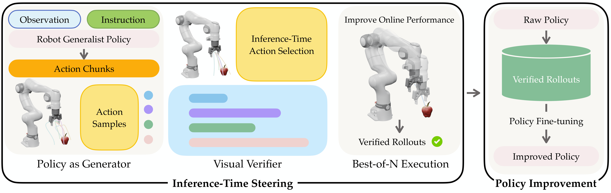
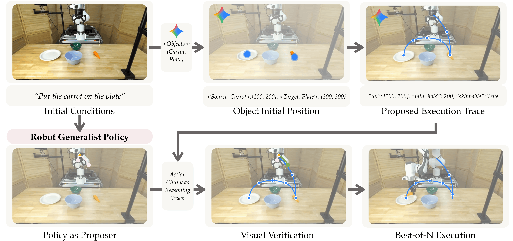
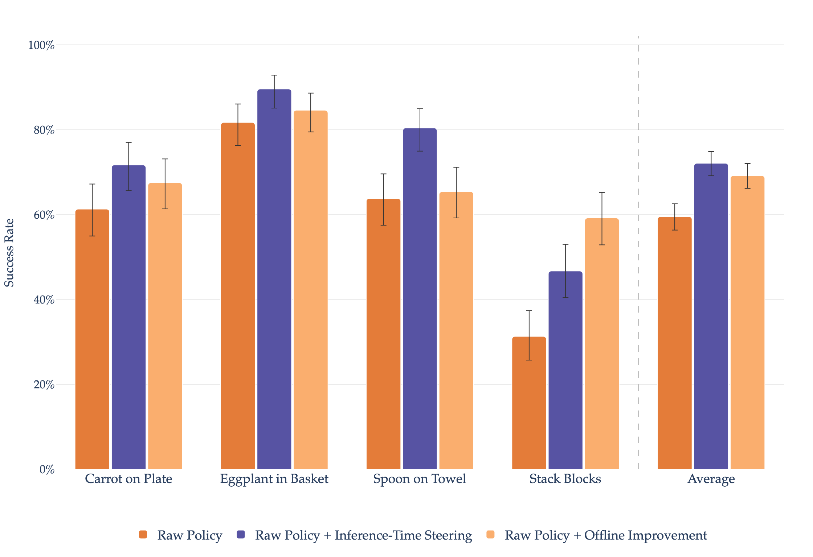
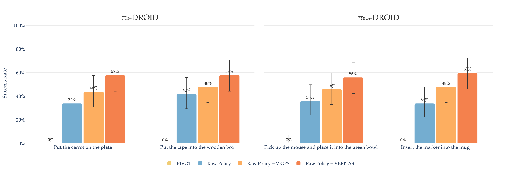
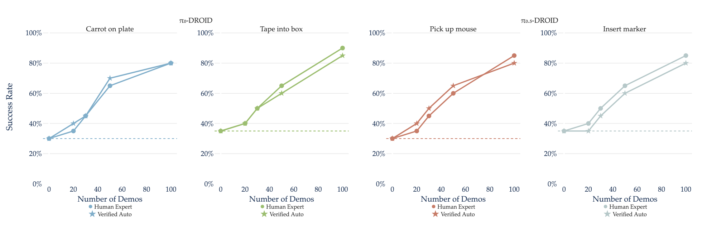

Visual Verification Enables Inference-time Steering and Autonomous Policy Improvement
Princeton University
RSS 2026

A pre-trained generalist policy acts as a stochastic generator, sampling multiple short-horizon action chunks at each decision step. A gradient-free visual verifier scores these candidates based on task alignment and physical plausibility, and the highest-scoring action is executed, yielding immediate performance gains at inference time. Successful verifier-guided rollouts are logged and reused for offline policy improvement, forming a data flywheel that distills verification-time reasoning into the policy and enables continual improvement with minimal human supervision.
Abstract
Robots deployed in the real world should learn from their experience and improve over time. This requires a mechanism of practicing and learning from feedback. In this paper, we propose VERITAS, a generator–verifier framework for generalist robot policies for inference-time policy steering and self-improvement. We use a pre-trained generalist robot policy as a “generator” and pair it with a gradient-free “visual verifier” that evaluates actions at inference time.
This framework enables inference-time steering that improves policy performance without additional training. We demonstrate that inference-time verification consistently outperforms vanilla generalists without training on additional demonstration data.
Additionally, we demonstrate that the verified rollouts provide effective supervision for offline policy improvement: policies fine-tuned on verified self-generated trajectories achieve consistent performance gains. Notably, we find that post-training with verified rollouts achieves comparable efficiency to expert demonstrations, while requiring no human interventions. Our results highlight inference-time verification as a practical and scalable mechanism for improving robotic policies during deployment.
Method

At inference time, a two-call VLM scheme is used to construct a visual verifier. First, given the initial observation and task instruction, the VLM identifies the target object to focus on, a detection model is then used to localize the object in image space. Second, conditioned on the object location, instruction, and initial observation, the VLM proposes a sequence of pixel-space waypoints that define a full visual trace for the task. During execution, the policy samples multiple action candidates, which are scored based on how well their resulting motion follows the proposed visual trace, and the best candidate is selected for execution. Successful verifier-guided rollouts are logged and used as training data for offline policy fine-tuning, resulting in an improved policy with higher task performance.
The loop is simple. A pre-trained generalist policy emits candidate action trajectories from the current observation. A gradient-free visual verifier evaluates each candidate against task semantics — no extra training, no labels — and the top-scoring trajectory is executed. Top-scoring rollouts are also retained as supervision; fine-tuning on them compounds the gains.
- i. Generator proposes. A pre-trained policy emits candidate action trajectories from the current observation.
- ii. Verifier scores. A gradient-free visual verifier evaluates candidates without additional training or labeled data.
- iii. Policy improves. Top-scoring rollouts become supervision; the policy is fine-tuned using the verified rollouts and the performance is improved.
Simulation Results
The policy trained in simulation under verifier-in-the-loop steering demonstrates robust and diverse whole-body control behaviors. Four representative rollouts are shown below; each clip is selected and steered at inference time by the visual verifier.
Simulation results. Verified rollouts across SIMPLER tasks.

While verification improves performance at inference time through action steering, fine-tuning on the collected verifier curated rollouts successfully distills these gains back into the policy weights.
Real-world Results

An average of 35% improvement in real-world deployment, without any policy fine-tuning. These gains highlight the effectiveness of inference-time computation alone in improving generalist policy performance. Note that PIVOT's naïve action primitives can not achieve successful outcomes, whereas a trained policy with a strong action prior performs effectively, highlighting the importance of good action priors for improving performance.

By converting deployment-time execution into effective training data, our approach enables scalable policy improvement without requiring continuous expert supervision. These findings suggest that execution-time verification not only improves performance online, but also enables a practical pathway for continual policy improvement by converting deployment experience into effective training data.
BibTeX
If this work is useful for your research, please consider citing:
@inproceedings{veritas,
title = {Visual Verification Enables Inference-time Steering and Autonomous Policy Improvement},
author = {Zhang, Mingtong and Shah, Dhruv},
booktitle = {Proceedings of Robotics: Science and Systems (RSS)},
year = {2026}
}